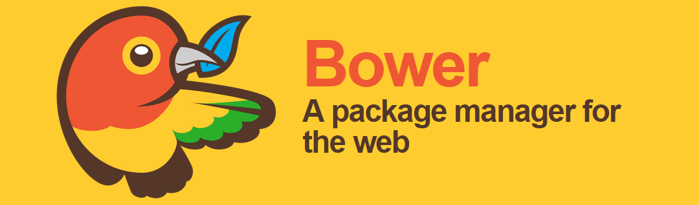

Bower

Установка Bower
Установить Bower легко. Предполагаем, что вы уже установили Node.js и npm (смотрите здесь для информации). Вначале инициализируем наш проект, создав файл package.json. Перейдите в папку проекта и наберите в командной строке:
$ npm init
name: (gulp-bower-example)
version: (0.0.0) 0.0.1
description:
entry point: (index.js) public/index.php
test command:
git repository:
keywords:
author: Davey Shafik <davey@engineyard.com>
license: (ISC) Apache 2.0
About to write to <path>/gulp-bower-example/package.json:
{
"name": "gulp-bower-example",
"version": "0.0.1",
"description": "",
"main": "public/index.php",
"dependencies": {
"bower": "~1.3.5"
},
"devDependencies": {},
"scripts": {
"test": "echo \"Error: no test specified\" && exit 1"
},
"author": "Davey Shafik <davey@engineyard.com>",
"license": "Apache 2.0"
}
Is this ok? (yes)Все необходимые запросы должны быть понятны, остальные можно пропустить.
Теперь можно установить Bower.
$ npm install -g bowerЭто сделает команду bower доступной глобально.
Чтобы сделать установку локально дополнительно выполните:
$ npm install --save-dev bowerУстановка произойдёт в ./node_modules/bower, команда bower доступна в ./node_modules/.bin/bower. Чтобы добавить эту папку в path автоматически, npm включает в себя подкоманду bin, которая вернёт путь к этой папке, независимо от того, где вы находитесь в проекте. Просто добавьте $(npm bin) в свой путь или используйте команду alias следующим образом:
alias npm-exec='PATH=$(npm bin):$PATH'Теперь можете набрать bower и он подберёт правильный вариант (локальный, если он существует или глобальный в противном случае). Если вы использовали alias, то можно указать команду npm-exec.
Использование Bower
Как и другие менеджеры пакетов Bower использует файл bower.json для настройки зависимостей.
Подобно Composer и npm, Bower будет относиться к каждому проекту как к устанавливаемой библиотеке по своим правилам. При этом, хотите ли вы просто использовать Bower для управления зависимостями или писать свои собственные библиотеки, настройка будет такая же.
$ bower init
[?] name: gulp-bower-example
[?] version: 0.0.1
[?] description:
[?] main file: public/index.php
[?] what types of modules does this package expose?
[?] keywords:
[?] authors: Davey Shafik <davey@engineyard.com>
[?] license: Apache 2.0
[?] homepage:
[?] set currently installed components as dependencies? Yes
[?] add commonly ignored files to ignore list? Yes
[?] would you like to mark this package as private which prevents it from being accidentally published to the registry? Yes
{
name: 'gulp-bower-example',
version: '0.0.1',
authors: [
'Davey Shafik <davey@engineyard.com>'
],
main: 'public/index.php',
license: 'Apache 2.0',
private: true,
ignore: [
'**/.*',
'node_modules',
'bower_components',
'test',
'tests'
]
}
[?] Looks good? YesЧтобы создать новый файл bower.json приходится пройти через множество вопросов. Некоторые из них довольно очевидные, в то время как другие могут несколько запутать.
main file (основной файл) — точка входа для приложения, в случае PHP это, вероятно, что-то вроде public/index.php.
what types of modules does this package expose? (какие типы модулей поддерживает этот пакет?) — если вы не создаёте собственные библиотеки, то можете пропустить этот пункт.
set currently installed components as dependencies? (задать уже установленные компоненты в качестве зависимостей?) — если вы установили пакеты вручную с помощью bower install, то они будут добавлены в качестве зависимостей в ваш новый bower.json.
add commonly ignored files to ignore list? (добавить обычно игнорируемые файлы в список?) — заставляет игнорировать типовые файлы и папки, такие как node_modules, bower_components или tests.
would you like to mark this package as private which prevents it from being accidentally published to the registry? (хотели бы вы пометить этот пакет как приватный, чтобы предотвратить его от случайной публикации в реестре?) — ответ yes остановит вас от случайной публикации «пакета» в реестре Bower.
С этого момента вы теперь можете легко установить пакеты, обновляя bower.json следующим образом:
$ bower install --save jquery bootstrapЭто позволит установить последние версии jQuery и Bootstrap в папку bower_components. Если вы проверите свой bower.json, он будет обновлён так:
"dependencies": {
"jquery": "~2.1.1",
"bootstrap": "~3.1.1"
}Теперь, если мы хотим установить эти зависимости для проверки новых версий, можем просто выполнить:
$ bower installЕсли папка webroot не является корневой для вашего проекта (что вероятнее так), вы можете легко изменить папку установки, создав новый файл .bowerrc со следующим содержимым:
{
"directory": "public/bower_components"
}После того как вы сделали это, удалите исходную папку и установите заново:
$ rm -Rf bower_components
$ bower installВы можете ссылаться на файлы как /bower_components/<пакет>/dist/<файлы>. Например, чтобы включить Bootstrap вы должны добавить следующие две строки в соответствующих местах:
<link href="/bower_components/bootstrap/dist/css/bootstrap.min.css" rel="stylesheet">
<link href="/bower_components/bootstrap/dist/css/bootstrap-theme.min.css" rel="stylesheet">
<script src="/bower_components/bootstrap/dist/js/bootstrap.min.js">Чтобы держать свои библиотеки обновлёнными до современных просто используйте bower update:
$ bower update bootstrapБерём контроль
Bower даёт нам полный контроль над установкой и управлением нашими библиотеками и их зависимостями — таким образом легко отслеживать управление версиями и легко распространять библиотеки внутри коллектива с помощью bower.json и bower install.
Теперь, когда наши зависимости под контролем, поддерживается их версионность и актуальное состояние, что насчёт развёртывания?
В следующем разделе будет рассмотрено как мы можем работать с компонентами Bower при разработке и развёртывании проекта.